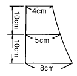
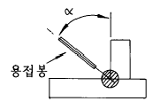
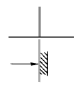
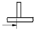
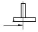
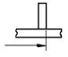
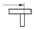
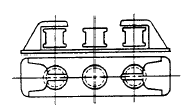
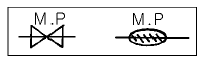

전산응용조선제도기능사 (2004-07-18 기출문제)
1과목: 조선공학일반
1. 선박의 선수 수선(垂線)과 선미 수선(垂線) 사이의 거리는?
- 전장
- 등록장
- 수선간장
- 선폭장
(정답률: 알수없음)

2. 항해시 날개를 물속에 잠기게 하고 그 날개의 양력에 의하여 지지되는 선박은?
- 활주형 선박
- 공기부양선
- 수중익선
- 배수량형 선박
(정답률: 알수없음)
3. 건현표에서 하기만재 흘수선을 나타내는 기호는?
- F
- T
- S
- WNA
(정답률: 알수없음)
4. 선박의 길이 36 m, 폭 7.1 m, 깊이 3.5 m, 흘수 3.0 m, 방형계수 0.680 인 선박의 배수톤수는? (단, 해수의 비중은 1.0254 이다.)
- 386.1 톤
- 462.9 톤
- 534.7 톤
- 625.4 톤
(정답률: 알수없음)
5. 다음 도면의 면적을 심프슨 공식을 사용하여 구하면?

- 100 cm2
- 106.7 cm2
- 120.3 cm2
- 110.6 cm2
(정답률: 알수없음)
6. 초기 트림(initial trim)의 설명으로 가장 옳은 것은?
- 선수흘수가 선미흘수보다 큰 상태
- 선박이 화물을 만재하였을 때 선수흘수가 큰 상태
- 선미흘수와 선수흘수가 같은 상태
- 설계시에 초기 선미흘수를 크게 한 상태
(정답률: 알수없음)
7. 선박이 그 중심점(中心點)을 통과하는 수평의 선수미 방향 축을 중심으로 주기적인 회전 왕복운동을 하는 것은?
- 좌우동요(swaying)
- 횡요(rolling)
- 선수동요(yawing)
- 상하동요(heaving)
(정답률: 알수없음)
8. 6.4 황동의 주요성분 구성으로 옳은 것은?
- 구리 40 %, 아연 60 %
- 구리 60 %, 아연 40 %
- 구리 60 %, 주석 40 %
- 구리 60 %, 알미늄 40 %
(정답률: 알수없음)
9. 선박용 특수목재로서 기름 성분이 많고 윤활성이 좋아 수중 베어링에 사용되는 재료는?
- 느티나무
- 리그넘바이티
- 나왕
- 삼나무
(정답률: 알수없음)
10. 선박 건조에 사용되는 FRP를 잘못 설명한 것은?
- 선체에 결합부가 생기지 않아 이상적인 구조물을 만들 수 있다.
- 비중이 강철보다 작다.
- 선체 표면이 거칠어서 마찰저항이 크게 된다.
- 내식성이 좋아 해수에 잘 견딘다.
(정답률: 알수없음)
11. 금속의 기계적 성질 중 질긴 성질을 나타내는 용어는?
- 인성
- 취성
- 가단성
- 전성
(정답률: 알수없음)
12. 선수흘수가 580 cm 이고, 선미흘수가 560 cm 인 선박의 트림을 계산하면?
- 선수트림 10 cm
- 선미트림 10 cm
- 선수트림 20 cm
- 선미트림 20 cm
(정답률: 알수없음)
13. 선박에서 타가 소요의 각도로 돌아갔을 때 타를 그 위치에서 고정시키는 장치는?
- 원동기
- 조종장치
- 전동장치
- 추종장치
(정답률: 알수없음)
14. 선박이 경사하였을 때 부력 작용선과 선체 중심선이 만나는 점은?
- 메타센터
- 복원정
- 무게중심
- 부심
(정답률: 알수없음)
15. 중앙기관선의 특징 설명으로 잘못된 것은?
- 선수미의 모양이 날씬하다.
- 만재 또는 공선일 때 트림 문제가 없다.
- 추진축이 길어 동력전달 효율이 높다.
- 선미기관선에 비하여 화물적재 용적이 작다.
(정답률: 알수없음)
16. 선박의 조파 저항에 가장 큰 영향을 주는 선형계수는?
- 중앙횡단면적계수
- 수선면적계수
- 주형계수
- 방형계수
(정답률: 알수없음)
17. 다음 중 선박 하역장치와 관계가 없는 것은?
- 캡스턴(capstan)
- 데릭 붐(derrick boom)
- 윈치(winch)
- 스펜 가이(span guy)
(정답률: 알수없음)
18. 살물운반선(bulk carrier)에서 항해중 화물이 한쪽으로 쏠릴 염려가 있는 공간을 없애기 위해 화물창 상부에 설치하는 공간 명칭은?
- 창구 코밍
- 호퍼(hopper)
- 이중저 탱크
- 현측 탱크(top side tank)
(정답률: 알수없음)
19. 선박에서 추력동력과 지시동력과의 비(比)는?
- 추진효율
- 선체효율
- 프로펠러효율
- 기계효율
(정답률: 알수없음)
20. 프루드가 분류한 선체저항 종류 중 잉여저항으로 짝지워진 것은?
- 조파저항, 조와저항
- 마찰저항, 조파저항
- 마찰저항, 와류저항, 조파저항
- 공기저항, 조파저항
(정답률: 알수없음)
2과목: 선박건조
21. 주철제의 정반으로 표면에 원형 구멍을 다수 가지고 있으며 요철가공 외에 소조립재의 변형방지 또는 블록조립에도 이용되는 정반은?
- 격자정반
- 벌집정반
- 플레이트정반
- 채널정반
(정답률: 알수없음)
22. 외판 랜딩(landing)작업에서 용접 심(seam)선을 결정하는 것과 관계가 없는 것은?
- 용접 버트(butt)선
- 공사용 정면도
- 외판전개도
- 선수미 방향의 용접선
(정답률: 알수없음)
23. 선체블록을 크레인으로 들어 올리기 위해서 부착하는 지그(jig)는?
- 아이플레이트
- 문형피스
- 스트롱백
- 쐐기
(정답률: 알수없음)
24. 수평 필렛 자동용접 시에 가장 적합한 용접봉의 기울기(α)는?

- 50 ∼ 60°
- 25 ∼ 45°
- 60 ∼ 80°
- 5 ∼ 20°
(정답률: 알수없음)
25. 파이프 강관 내면의 거스러미(burr)를 깎아내는데 사용하는 공구는?
- 래칫(ratchet)
- 파이프 리머(pipe reamer)
- 오스터(oster)
- 파이프 커터(pipe cutter)
(정답률: 알수없음)
26. 슬라이딩 진수시 진수과정을 차례대로 옳게 나열한 것은?
- 트리거 안전장치 제거 - 도그쇼어 제거 – 모래반목 제거 - 지지로프 절단
- 모래반목 제거 - 도그쇼어 제거 - 트리거 안전장치 제거 - 지지로프 절단
- 도그쇼어 제거 - 모래반목 제거 - 트리거 안전장치 제거 - 지지로프 절단
- 도그쇼어 제거 - 모래반목 제거 - 지지로프 절단 - 트리거 안전장치 제거
(정답률: 알수없음)
27. 화재의 종류 구분 중 일반화재를 뜻하는 것은?
- A급 화재
- B급 화재
- C급 화재
- D급 화재
(정답률: 알수없음)
28. 전기 용접 작업시 감전사고 예방에 대한 조치로서 잘못 설명된 것은?
- 홀더의 절연 커버가 파손되면 즉시 교체한다.
- 접지는 지하 배관, 레일 등에 튼튼히 한다.
- 작업이 중단되거나 끝날 때는 즉시 스위치를 끈다.
- 습기가 많은 곳에서는 고무 장화를 신도록 한다.
(정답률: 알수없음)
29. 피복 아크 용접시 발생하는 유해가스의 재해를 방지하기 위한 가장 적절한 방법은?
- 보통의 마스크를 이중으로 사용한다.
- 마스크를 냉수에 적시어 사용한다.
- 마스크를 온수에 적시어 사용한다.
- 마스크를 가성소다액에 적시어 사용한다.
(정답률: 알수없음)
30. 강판을 가스 절단하면 절단 후에 강판에 변형이 생긴다. 이 변형을 방지하는 방법이 아닌 것은?
- 구속법
- 수냉법
- 가열법
- 공냉법
(정답률: 알수없음)
31. 조립 지그 중 형강을 강판에 밀착시킬 때 사용되는 지그는?
- 눈틀림 고치기 피스
- 턴 버클 피스
- 스트롱 버클 피스
- 문형 피스
(정답률: 알수없음)
32. 부재의 이동 운반장치가 아닌 것은?
- 트레일러
- 컨베이어
- 벤딩 롤러
- 대차
(정답률: 알수없음)
33. 선체조립 작업시 틈새가 발생하는 경우 여러가지 방법으로 처리하는데, 틈새가 16mm 이상으로 큰 경우 처리하는 방법은?
- 라이너를 삽입하여 용접한다.
- 육성 용접으로 틈새를 채운다.
- 백스트립을 대고 용접한다.
- 강판을 신환한다.
(정답률: 알수없음)
34. 강판 등에 마킹을 하는 목적은 어떤 정보를 전달하는 것인데 그 정보에 해당되지 않는 것은?
- 가스절단을 하기 위한 정보
- 굽힘가공을 하기 위한 정보
- 조립을 하기 위한 정보
- 진수를 하기 위한 정보
(정답률: 알수없음)
35. 선체 조립공사의 주된 작업은?
- 마킹작업
- 절단작업
- 용접작업
- 굽힘작업
(정답률: 알수없음)
36. 다음 중 선체 종강력 부재가 아닌 것은?
- 외판
- 상갑판
- 종늑골
- 선저늑판
(정답률: 알수없음)
37. 래킹에 효과적으로 대응하는 부재가 아닌 것은?
- 늑골
- 갑판보
- 용골
- 브래킷
(정답률: 알수없음)
38. 이중저의 실체늑판에 뚫는 개구(開口) 중 이중저 내의 물이 자유롭게 통하게 하기 위한 것은?
- 림버 홀(limber hole)
- 스켈롭(scallop)
- 라이트닝 홀(lightening hole)
- 에어 홀(air hole)
(정답률: 알수없음)
39. 선박의 선창에 설치되는 수밀격벽의 최대간격은?
- 20 m
- 30 m
- 40 m
- 50 m
(정답률: 알수없음)
40. 격벽의 역할에 대하여 잘못 설명된 것은?
- 화물창내의 물기가 화물을 적시는 것을 방지한다.
- 방화벽의 역할을 한다.
- 횡강재 역할을 한다.
- 화물을 성질별로 나누어 적재할 수 있다.
(정답률: 알수없음)
3과목: 선박구조 및 조선제조
41. 다음 부재 중 선수부와 관련이 없는 부재는?
- 패션 플레이트(fashion plate)
- 브레스트 훅(breast hook)
- 용골(keel)
- 창내 늑골(hold frame)
(정답률: 알수없음)
42. 선수창의 선저 전단부 부근에는 특히 좁으므로 일반적으로 어떻게 시공하는가?
- 기름탱크로 활용한다.
- 밸러스트탱크로 사용한다.
- 시멘트로 채운다.
- 밀폐된 공간으로 한다.
(정답률: 알수없음)
43. 정투상법의 3각법에서 평면도는 어디에 배치되는가?
- 정면도 우측
- 정면도 위쪽
- 정면도 아래쪽
- 정면도 좌측
(정답률: 알수없음)
44. 두께가 얇은 물체, 구조물 등의 표면을 평면에 전개한 도면은?
- 공정도
- 상세도
- 조립도
- 전개도
(정답률: 알수없음)
45. 해칭선의 용도를 옳게 설명한 것은?
- 가는 실선으로 절단면임을 표시한다.
- 가는 일점쇄선으로 기어 부분에 기입한다.
- 가는 실선으로 평면을 표시한다.
- 가는 일점쇄선으로 도형의 중심을 표시한다.
(정답률: 알수없음)
46. 선체 정면선도에서 기선에 수직으로 나타나는 선은?
- 갑판 현측선
- 불워크선
- 종단면선
- 수선
(정답률: 알수없음)
47. 선박의 예비 부력을 늘리고, 능파성을 증대하기 위하여 설계되어지는 선박의 형상은?
- 텀블 홈
- 현호
- 빌지 킬
- 캠버
(정답률: 알수없음)
48. 일반배치도에 기입된 F.O.T 의 뜻은?
- 선수수창
- 청수탱크
- 연료유탱크
- 급수탱크
(정답률: 알수없음)
49. 일반배치도에 표시되는 약자중 수밀문을 나타내는 것은?
- BHD
- W.T.D
- W.N.D
- NT.D
(정답률: 알수없음)
50. 선체를 구성하는 재료의 형상, 치수, 결합 방법 및 그 밖에 필요한 사항을 도면으로 나타낸 것은?
- 일반배치도
- 선박계획도
- 선박구조도
- 선박의장도
(정답률: 알수없음)
51. 치수선의 표시가 도면과 같을 때 실제 모양은?





(정답률: 알수없음)
52. 도면 치수 표기에서 면재의 치수를 a × b + c × d FB(T)로 나타낼 때 웨브(web)의 두께 치수는?
- a
- b
- c
- d
(정답률: 알수없음)
53. 아래 그림과 같은 의장품의 명칭은?

- 페어 리더
- 촉(chock)
- 볼러드(bollard)
- 비트(bitt)
(정답률: 알수없음)
54. 선박 도면에서 다음과 같은 약도가 뜻하는 것은?

- 페어 리더
- 와이어 릴
- 계선 구멍
- 컴퍼스
(정답률: 알수없음)
55. 선체의 모든 중량을 늑골간격 단위 길이마다 계산하여 곡선으로 나타낸 것은?
- 중량 곡선
- 부력 곡선
- 하중 곡선
- 전단력 곡선
(정답률: 알수없음)
56. 선체의 주요 강력부재의 배치, 치수 등을 나타내며, 선체 각부의 상세도를 작성하는데 있어서 기초가 되는 도면은?
- 강재배치도
- 일반배치도
- 구조도
- 중앙횡단면도
(정답률: 알수없음)
57. 선수루 갑판 위에 설치되는 의장품이 아닌 것은?
- 보트 대빗
- 양묘기
- 페어리더
- 볼러더
(정답률: 알수없음)
58. 유조선에서는 보통 기관실을 선미에 설치하는데 선미기관선의 특징 설명으로 틀린 것은?
- 축로를 설치할 필요가 없고 축계의 길이도 짧아진다.
- 중앙부에 기관실이 있을 경우보다 코퍼댐의 수가 증가한다.
- 화물유를 만재하였을 경우에 작용하는 새깅모멘트에 대해 종강도면에서 유리하다.
- 화재의 위험성을 감소시킬 수 있다.
(정답률: 알수없음)
59. 상갑판 또는 선루갑판 등에 파도가 몰아치는 것을 방지하기 위하여 설치하는 구조물은?
- 격벽
- 불워크
- 양화기
- 셀 가이드
(정답률: 알수없음)
60. 선측에 붙은 종통재로 늑골의 위치를 확보하고 외판의 뼈대가 되며, 충분한 길이를 가졌을 때 종강력 부재로도 되는 것은?
- 방현재
- 거널 형재
- 현측후판
- 선측 스트링어
(정답률: 알수없음)